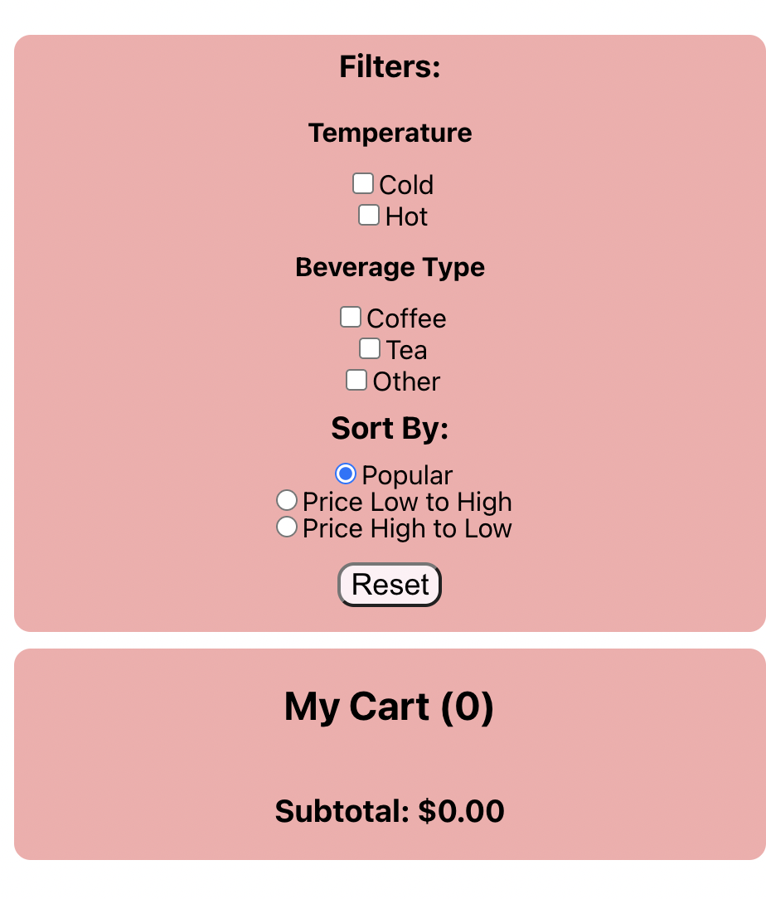

Local Coffee Shop Site Development
Overview
Through this project, I designed and developed a local coffee shop's
menu and ordering interface using React.

Usability Principles
In addition to sharpening my React skills, I focused on creating a site that was highly usable
by implementing the following usability principles:
- Layout: My layout encourages a reading path and I put action
buttons at the end of the up-to-down scan pattern of each
container. For example, the "Add to Cart" and "Remove from Cart"
buttons are located at the bottom of each drink card. Similarly,
the reset button is located at the bottom of the container of
filters and sorting options.
-
Heirarchy: I used grouping to segment the screen into 3
sections: the drink cards, the filter/sorting container, and
the cart. All of the drink cards are aligned in one column
and' have equivalent headings, colors, and formatting to show
that they are equivalent. Within the filter/sorting container,
the possible filters and sorting types are explicitly grouped
through an enclosure.
-
Consistency: My website also has consistency: all the filters
are done with checkboxes, sorting with radio buttons, and
other buttons with the same style type in which they can be
hovered and clicked. This promotes learnability.
Sorting & Filtering
Through this project, I learned how to code sorting and filtering algorithms
in React! Although it took some time to master, it was a great way to better
understand how to use React components and Hooks.

The Final Product
Overall, I was really pleased with how much React development I was able to learn
over the course of this project. I am excited to continue to code in the platform!